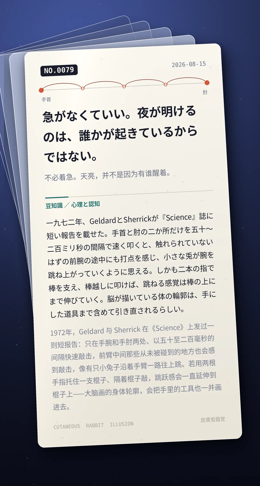

急がなくていい。夜が明けるのは、誰かが起きているからではない。（不必着急。天亮，并不是因为有谁醒着。）
一九七二年、GeldardとSherrickが『Science』誌に短い報告を載せた。手首と肘の二か所だけを五十〜二百ミリ秒の間隔で速く叩くと、触れられていないはずの前腕の途中にも打点を感じ、小さな兎が腕を跳ね上がっていくように思える。しかも二本の指で棒を支え、棒越しに叩けば、跳ねる感覚は棒の上にまで伸びていく。脳が描いている体の輪郭は、手にした道具まで含めて引き直されるらしい。（1972 年，Geldard 与 Sherrick 在《Science》上发过一则短报告：只在手腕和手肘两处、以五十至二百毫秒的间隔快速敲击，前臂中间那些从未被碰到的地方也会感到敲击，像有只小兔子沿着手臂一路往上跳。若用两根手指托住一支棍子、隔着棍子敲，跳跃感会一直延伸到棍子上——大脑画的身体轮廓，会把手里的工具也一并画进去。）
冷知识由执笔的模型自行查证。逐条断言、来源与所引原句存档在纯文字副本里，未经程序逐字校验，留作事后核实。